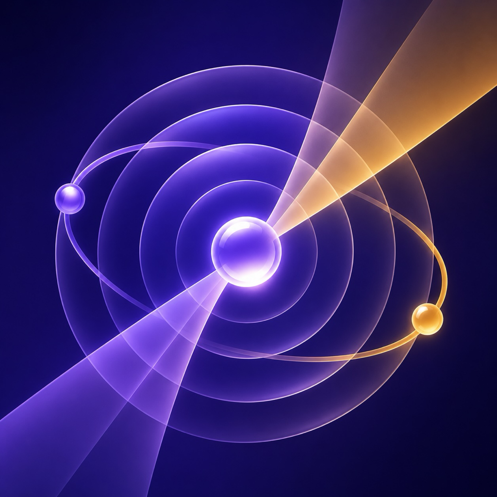

Общий музыкальный эфир для двух — и больше — домов. Одна и та же музыка звучит синхронно у каждого, как будто вы в одной комнате.
Режим сближения: общий эфир. Кидаешь ссылку на трек или плейлист в Telegram — и он стартует одновременно во всех домах, с точностью до долей секунды.
Голосовое сообщение боту аккуратно встраивается между песнями — как голос диджея ночного радио. Можно лично одному дому, можно всем.
Каждый слушает своё, но связь остаётся: командой /inject можно подкинуть трек прямо в очередь партнёра.
Каждый дом играет из своего Spotify под своим аккаунтом. Аудио и пароли никогда не покидают ваш дом — между домами летят только команды.
@barycenter_bot → /create — твой барицентр создан, бот выдаст код подключения.
Скачай, перетащи в Программы, введи код в окно — готово. Никаких настроек и терминалов.
/share — одноразовая ссылка для партнёра или друзей. Их дома подключаются так же: код в окно.
Каждая сборка Пульсара подписана, нотарízована Apple и несёт криптографическое доказательство происхождения (SLSA). Любой может убедиться, что бинарь собран ровно из открытого кода:
gh attestation verify Pulsar.dmg --owner relux-works
Исходники: github.com/relux-works/barycenter